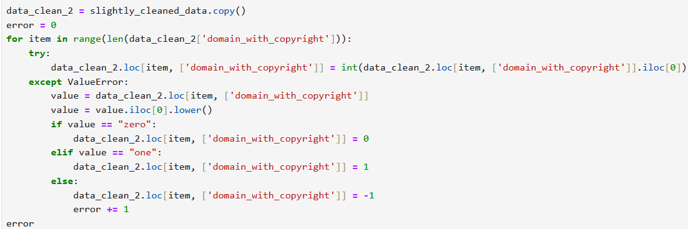

Something about phishing
The dataset has a bunch of analysis about urls and their characteristics as well as whether they are a phishing link or not
Pre-processing of the data required multiple steps. There were no entires with null values, but not all fields contained useful data. The first two, an undescribed integer and the url itself, were removed for not providing additional information. Multiple other fields were removed due to all entries having a value of 0. The last major step in pre-processing was the standardization of the "domain_with_copyright" field. Most entries had either the numeric value of 0 or 1, but some had "zero" or "one" instead. The code used to replace any strings with numbers is shown below:
The variable "error" was used to check for values that were not "one" or "zero" so that I could handle them manually. None were found.
I did forest because it seemed best. Naive Bayes could have worked with total_of_symbol variables but it would have been harder to set up. SVM would be better with variables that were more consistantly above zero. Explain why KNN is stupid here.
Explain my metrics
Storytelling????? I guess????? Idk get metrics on most important variables ig
As useful as improved phishing detection could be, it is not without risk. The benefits of improved phishing detection algorithms are making client-side programs more effective at blocking these sites, helping email clients sort out emails with phishing links from emails with legitimate links, and potentially helping end users better identify what makes a link or url more likely to be unsafe. However, if this were to reach phishers, they could use the information gained from this research to "improve" their links and make them harder to recognize. This does not make these results irrelevant, the continued presence of older variants of malware in addition to new threats makes it likely that even as some phishers change their urls to avoid detection, many will still be blocked.